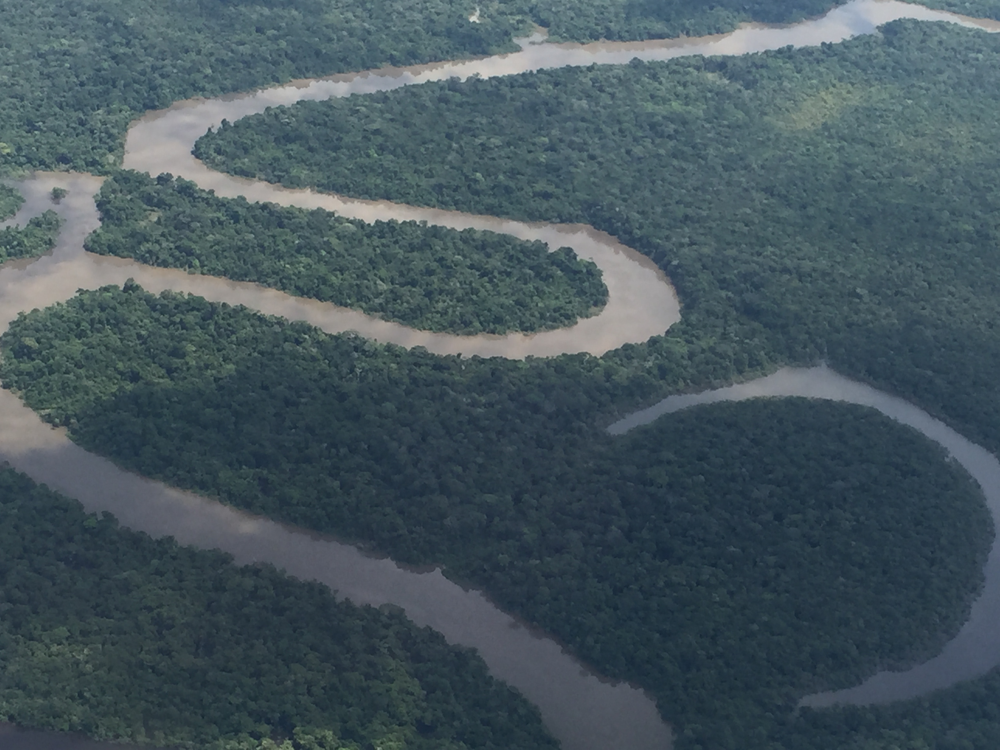
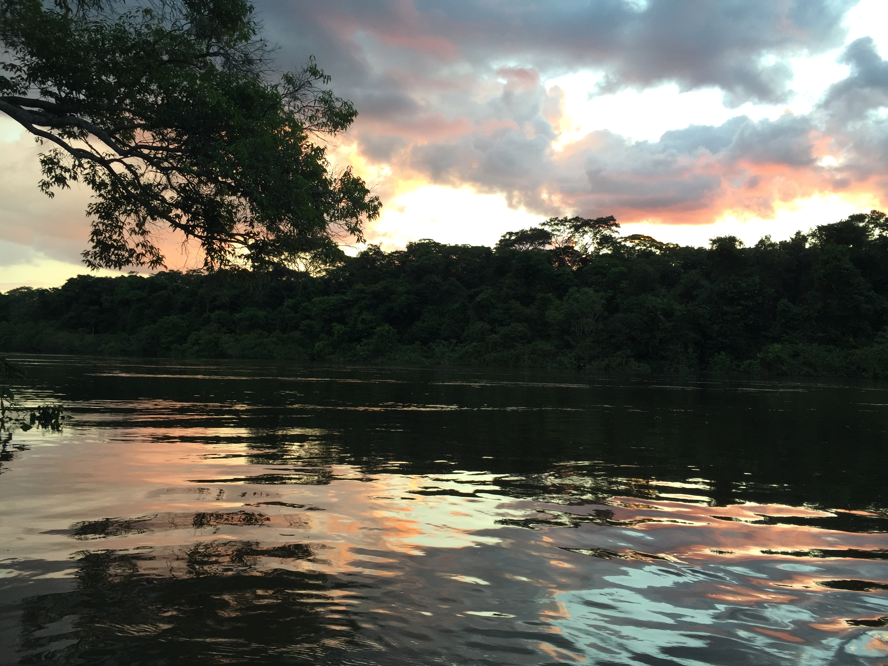
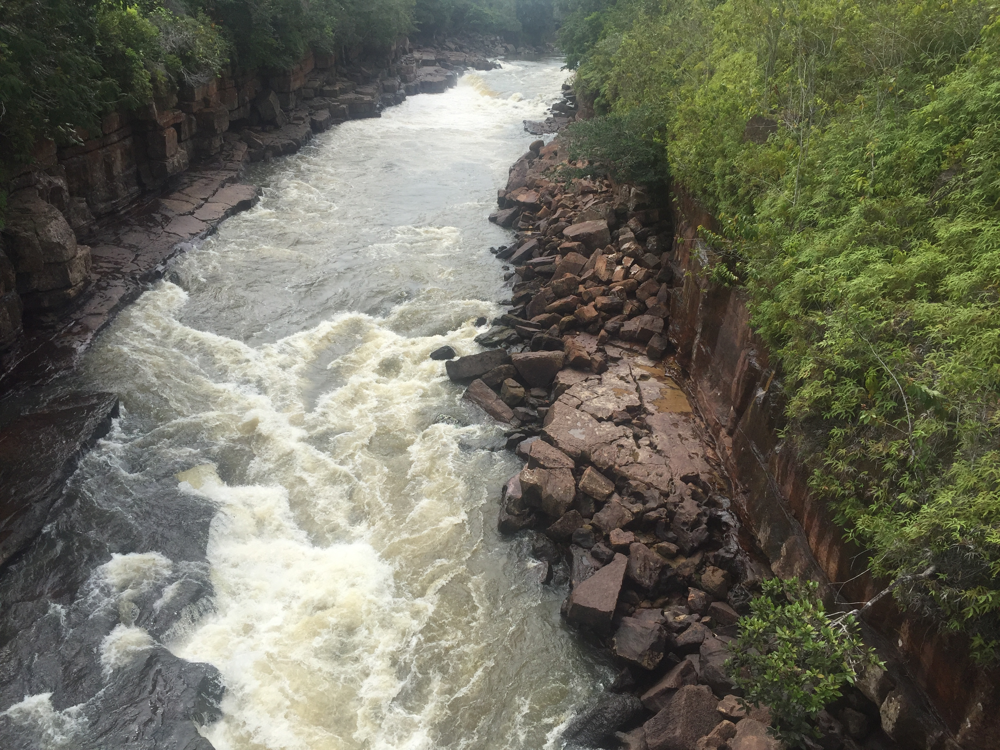
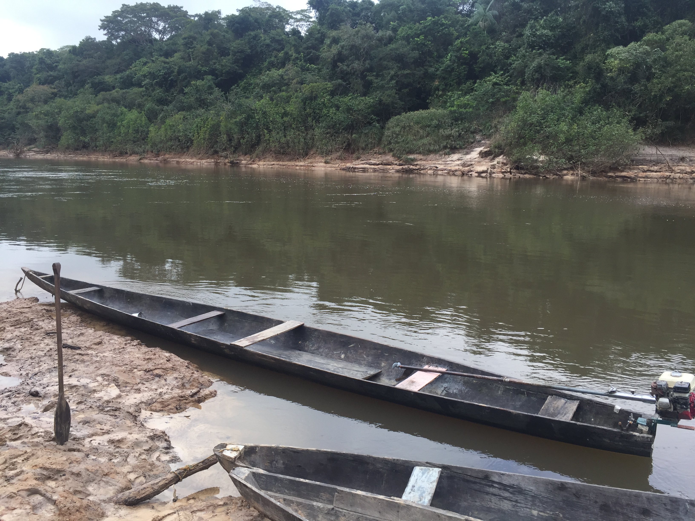
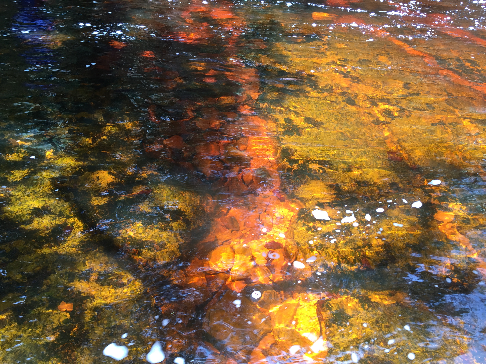
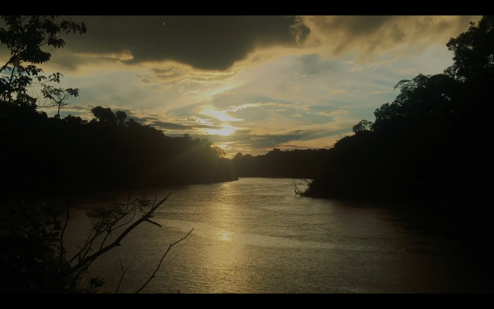
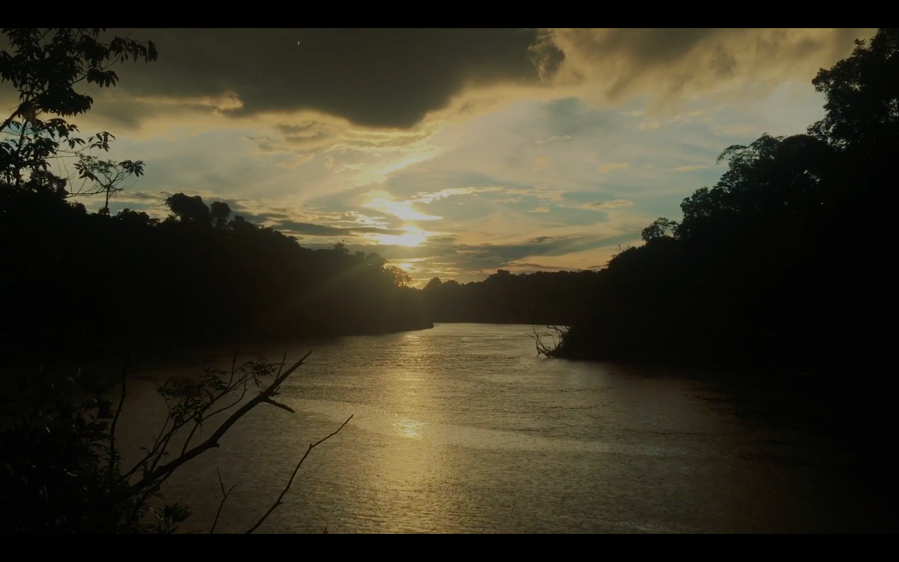

—El Río. Idea y cámara por Omar Rincón. Edición por Gabriel Linares

“Una de las claves de la paz es desmovilizar de la guerra a periodistas, empresarios, políticos, académicos, antropólogos, artistas, publicistas…
desmovilizarlos de Bogotá y Medellín y sus saberes expertos para llevarlos a los territorios donde reina el abandono del Estado pero sobreviven otros modos de pensar, sentir y habitar la vida.”
–Omar Rincón

Dice el relato que en las culturas de la cuenca del río Pirá Paraná confluyen los sitios sagrados que nutren a todos los seres vivientes del mundo. Y que por eso fueron en el 2011 reconocidas por la Unesco como Patrimonio Inmaterial de la Humanidad. El libro se llama Hee Yaia Godo – Bakari y traduce “El territorio de los Jaguares de Yurupari”. Y es un experimento de producción colaborativa nativa de conocimiento. Más de 50 narradores. La autoría es de las etnias Barasana, Eduria, Itana, Bara, Makuna y Tatuyo que habitan en el río Pirá Paraná, al sur del Vaupés, en la Amazonía colombiana. Los relatos cuentan de sus historias, sus rituales y sus conocimientos ancestrales sobre la vida en la tierra.

La investigación duró más de diez años y fue hecha por la Fundación Gaia Amazonas. El libro es muy bonito y pesado, tiene 426 páginas coloridas y con un diseño sensible a la sabiduría que cuenta. Se lee sobre rituales y curaciones; se sabe acerca de la maloca, el yagé, la coca y el tabaco; se alucina con el calendario ecológico; se sonríe con las lagunas y los caños de agua; se conmueve con las mujeres indígenas y sus saberes sobre los cultivos, el cuidado de la tierra y las semillas. Nos cuentan su conocimiento para endulzar la tierra; esa ciencia que a través del chamanismo previene las enfermedades para que el territorio se mantenga en equilibrio. Un conocimiento sobre la ciencia de la vida que desde lo ancestral viene a iluminarnos con sabidurías de conexión con la naturaleza y que afirma que el conocimiento genera bienestar.
—Conocimiento ancestral, Relatos de un salvaje de ciudad sobre los goces poderosos de la civilización Huitoto. Omar Rincón.


—El Río. Idea y cámara por Omar Rincón. Edición por Gabriel Linares

 
